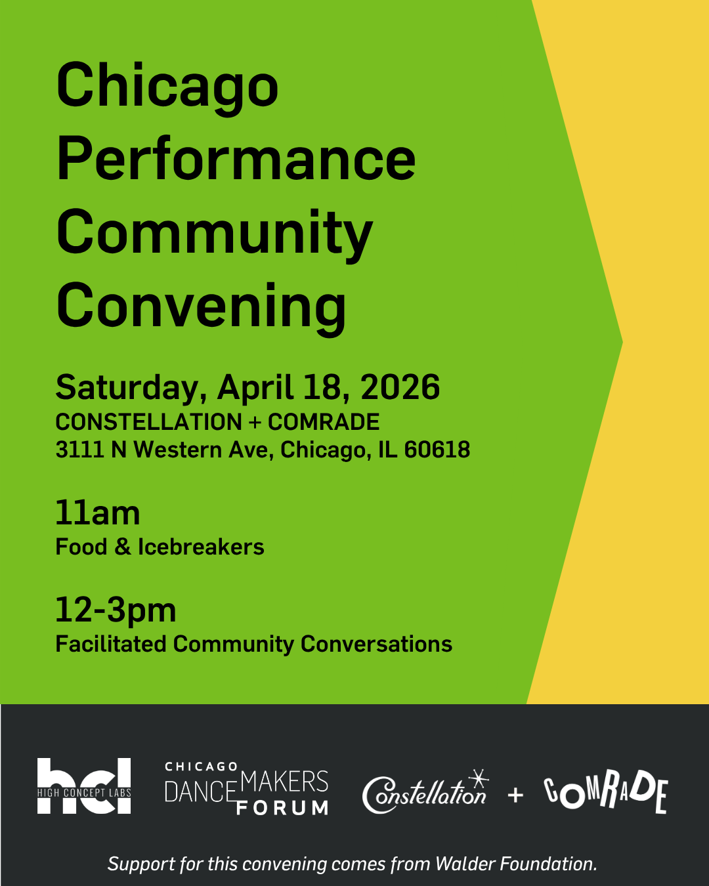

Chicago Performance Community Gathering
The Chicago Performance Community Convening invites artists and performance makers to participate in a facilitated discussion to see how we can develop better, stronger, and more sustainable opportunities for performing artists together.
With the guidance of Alysha Monique, Nora Sharp, and Sam Thousand, we will: – Hold space for processing recent shifts within Chicago’s performance ecosystem; – Imagine creative solutions for what should happen next; – Enable collaboration among a multiplicity of experiences & perspectives; and – Devise and document actionable strategies.
Following the convening, HCL & CDF will provide a summary of the ideas and strategies generated, along with potential action items for artists and organizations.
This convening follows the Chicago Performance Community Survey, an anonymous survey intended to be a quick check-in in response to shifts and losses within Chicago’s performance ecosystem. The survey received 93 responses, all stating some degree of interest in participating in a convening to discuss collective needs and strategies with other members of the Chicago performance community.
This convening is organized and presented by Chicago Dancemakers Forum and High Concept Labs—two organizations committed to supporting experimental performance and artistic practice.
This free gathering will include complimentary refreshments, including a light lunch.